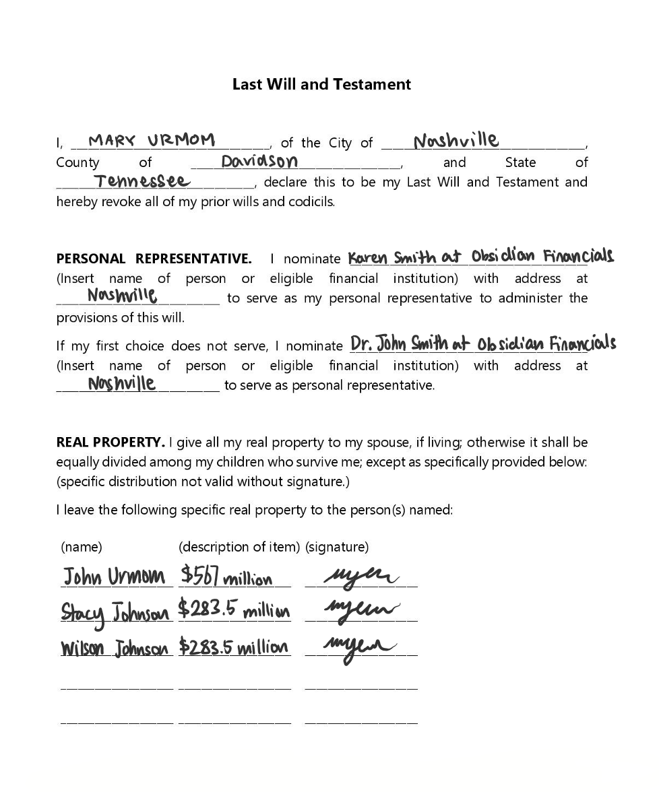
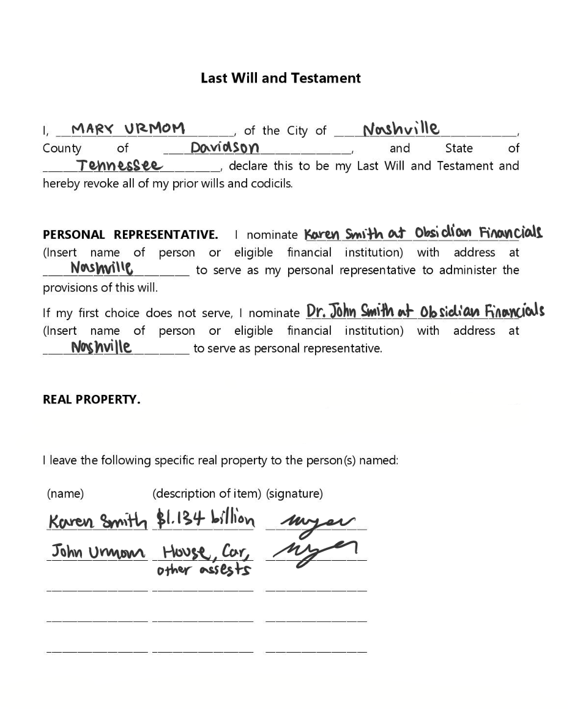
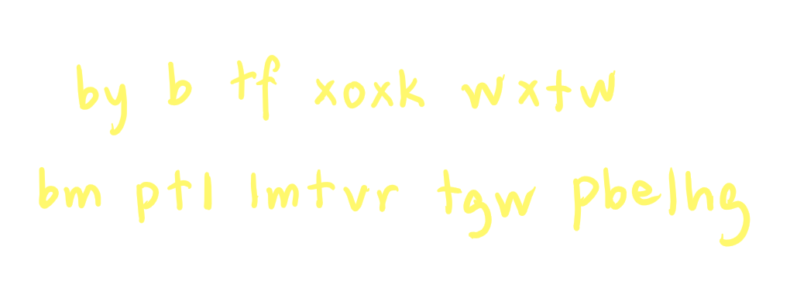

Room 4: Mary's Will
Who might she have left 1.134 billion for...
After narrowly escaping the collapsing bank through a small emergency exit, you and your team realize that the bank will not offer you any useful information, and any physical evidence has now been destroyed.
Instead, you choose to head back to your office and continue looking into Mary's background.
"I remember asking you to find if Mary had left a will of any sort. She was pushing 60 when she died, after all," You say to your agent.
Your agent nods. "I did indeed dig up the will she had written - I think it contains some useful information that could help us pinpoint the culprit. Let's go back and take a look."
When your team arrives back at the office, your agent pulls up the will. You all gather around to take a close look:

"Isn't it interesting that, for being such a private woman, she would allow her will to just be handed over like that?" You muse.
"It's certainly interesting, the bank didn't even say a word when I asked about it for the investigation, they just handed it over," Your agent states.
You make some notes on your investigation notepad.
INVESTIGATION NOTES ON MARY'S MURDER
Information Gathered from Mary's Will
- Mary trusted her best friend and her best friend's father with the administration of the will.
- However, Mary only left money and property for her spouse and her siblings, excluding said administrators.
- Mary left considerable sums for the above beneficiaries - namely the most for her spouse, and then split the rest between her siblings.
"Hey, Obsidian Financials?" Your agent raises an eyebrow, pulling out the map your team had used to escape the bank previously.

"Wait, it's the same bank?" You notice, then jot in your notepad.
INVESTIGATION NOTES ON MARY'S MURDER
Information Gathered from Mary's Will
- Karen Smith and Dr. John Smith are tied to Obsidian Financials in some way. Need to question.
Your team decides to visit Karen Smith and Dr. John Smith's residence, to question them separately about their involvement with Obsidian Financials.
"I don't know much about that bank, to be frank," Karen Smith states plainly. "I'm only associated. My dad owns it, so he might know more. Mary did leave me with a copy of her will, but that's about all I can help you with." You ask to see that copy, which she hands over to you for investigation purposes.
"I do own that bank, but it was more like a historic bank passed down through my family," Dr. John Smith says. "I'm not really the operations manager or anything, so I don't know what goes on there."
Unlucky - they both seem to not know much about this bank. At the office, your team instead decides to take a look at the copy of Mary's will handed over by Karen, wondering if Mary could've hidden some clues in the will.

"Wow, check this out," You exclaim to your agent. "Look! The beneficiaries are completely different!"
What could possibly be up with that? You wonder back to your conversation with Karen. She had stated that Mary personally handed this copy of the will to her, telling her to keep it safe and "under no circumstances share this unless something happens to me". If Karen isn't lying, that could only mean one thing.
"The beneficiaries on the will were maliciously changed to be against Mary's real will," Your agent speaks your thoughts. "It would be right to suspect those that are now listed on the official copy of the will - but how could they have gotten access to it? It should've been protected by the bank."
You sigh. "That bank is sketchy as heck. I think we're right to now name our 3 primary suspects John Urmom, Stacy Johnson, and Wilson Johnson." You highly doubt now that it could be Karen or Dr. John Smith, as they had been personally entrusted by Mary.
You then notice something on the backside of the Karen's copy of the will - a very light scorch mark, as if someone had once applied too much heat to the paper. Could Mary have possibly hidden a secret message?
You decide to try the old lemon juice trick - the paper does seem a bit shriveled, in any case.
To your surprise, it actually works! You did not expect it to be so easy. But spoke too soon - because the hidden message looks like a mess of jumbled nonsense.

WHAT WAS MARY'S MESSAGE?
Note: Rules from the Puzzle Rulebook continue to apply.